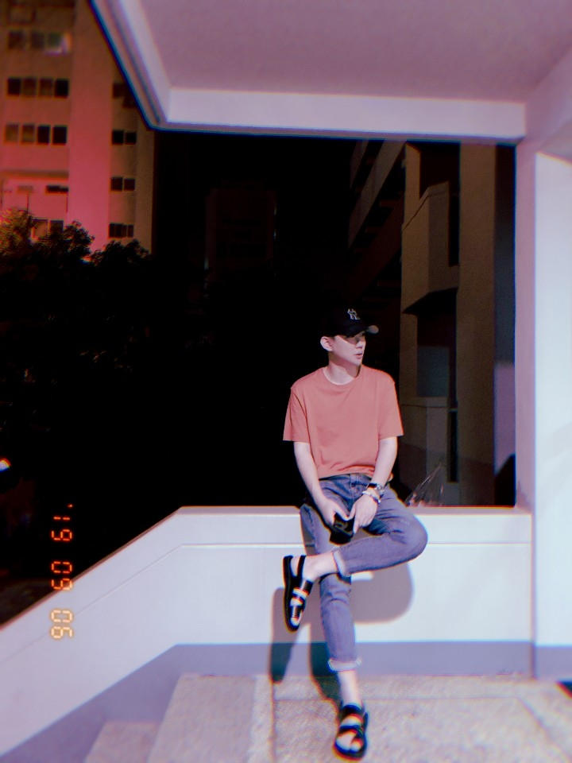

Juyeong Kang
Biography
Juyeong Kang is an international student from South Korea studying a Fine Arts degree in Digital Media Arts at San Jose University. He came to the United States to study coding at first. By the way, he began to get interested in art when he happened to take an art class at Deanza College. After that, he changed his CS major to graphic design at Deanza College and took art classes, then, he became interested in Art and fell in love with it. After studying art for two years, Juyeong transferred to San Jose State University for graphic design. However, after counseling with an advisor in the transfer process, he became very interested in digital media art. The unique mixed media art that only digital media art has and the ability to do various genres of digital art was an interesting factor that changed his major to digital media art. Currently, he is a senior at San Jose State University, majoring in BFA digital media art.